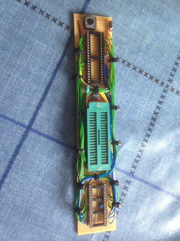
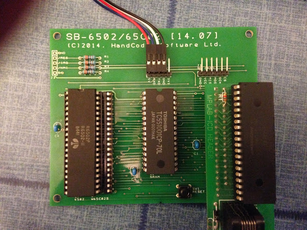

How many chips do you need to create a simple 6502 based system? Normally you would expect to have the microprocessor (MPU) plus a ROM containing the firmware, some static RAM, an I/O chip like an ACIA USART or a VIA and some logic chips to decode the address and control signals.
In 2013 Mike McLaren posted a design to the 6502.org forum that used just three chips. A 6502 MPU, a SRAM and a PIC 18F micro-controller that performs the function of all the other chips we would normally have to include.
I decided to have a go myself but adjusting some of the elements of Mike's design to allow an SPI bus to be added and support for interrupts.
My first attempt at building a similar system was done on strip board with a lot of wires between the sockets. Hidden under the wires are four 100nF decoupling capacitors and four 3K3 pull up resistors (for /RES, /IRQ, /NMI and RDY).

64K SRAM chips are rare so I decided to use a 128K chip with the A16 pin tied permanently to ground. This wastes half the chip but means that only a single chip select line is needed freeing the other pins on the PIC to signal IRQ interrupts and control an SPI device.
This is the schematic for the prototype. The four pins used for SPI (i.e. /CS, SCK, SDI and SDI) are not connected to anything. Click the image for a larger view.
The PIC is the heart of the system providing the PHI0 clock signal to the 6502. Initially the PIC keeps the 6502 in a 'reset' state by holding the /RES signal low but keeps providing PHI0 pulses to allow the MPU's internal state machine to get ready for execution.
When the 6502 is released from reset by allowing /RES to go high the MPU will perform a series of internal operations similar to an interrupt which end in the reading of the reset vector at $FFFC/D. Normally this address would be decoded to a location in a ROM but the minimal computer has no ROM only SRAM which at power on will probably contain random garbage. So when the PIC detects this address being read it provides a dummy address on the data bus. The MPU will then begin to read instructions from this address and execute them.
To transfer a boot ROM image into the SRAM the PIC responds to the MPU's memory read signals by dynamically generating a series of LDA immediate and STA absolute instructions that will save the boot code into SRAM byte by byte. The PIC enables the chip select on the SRAM on the final cycle of the STA instruction to allow the write to update the memory chip.
At the end of each page of data transfer (e.g. every 256 bytes) a JMP absolute is generated to keep the PC within a limited memory range. When all of the ROM image has been transferred then a JMP ($FFFC) is executed to restart the microprocessor at the real firmware reset entry point. At this point the PIC stops controlling the 6502 and becomes subservient to it.
While continuing to generate the PHI0 clock signal it monitors the memory addresses the 6502 is attempting to access. If the address falls on page $FExx then it emulates a read or write to a 6551 ACIA or SPI65 support chip. Outside of this range it enables the SRAM so it can be accessed. If either of the emulated peripherals needs to signal an interrupt then the /IRQ pin is made low. When the condition has been serviced by reading from emulated device the pin will return high.
After getting the prototype to work for a 6502 I wondered if the same design could support a WDC 65C02 device as the pin out is very similar. In my initial testing I used a 40 pin DIP socket with pin 1 removed to prevent /VP being shorted to ground and a wire link between /RES and /BE.
I decided to add some additional code to the PIC firmware to determine the type of device present using the well documented indirect jump bug. Before starting the ROM load process the PIC feeds a JMP ($00FF) instruction to the MPU. If the CPU attempts to read from $00FF and $0000 then a 6502 is present. If $00FF and $0100 are accessed the a 65C02 is in use. This information is used to pick between two different boot ROM images held in the PIC.
Finally I designed a simple PCB for the project that allows either MPU to be installed using a pair of overlapped sockets. The board also brings the UART and SPI signals out to header pins along with power connections. I use a PL2303 USB serial module to both power and connect the board to my development PC. The pins on the SPI header match those expected by several micro SD card modules.
The photo below shows my 6502 board with the PIC in a Microchip debugging header. When the PIC firmware is complete the chip will be placed directly in the 40 pin socket underneath.

| << Back |
|
Contents |
© Copyright 2014 Andrew John Jacobs. All rights reserved.
All trademarks and service marks are the properties of their respective owners.